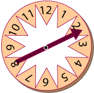
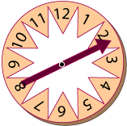

Random Numbers
 

A single die can be regarded as a random number generator that selects a number from the range 1 through 6. Each number is equally likely. The same is true for a second throw of the die. The outcome of the first throw does not affect the outcome of the second throw (or of any other throw).
People often use the phrase random number to mean an integer randomly selected from a range of integers. The spinner, for example, randomly selects an integer from the range one through twelve.
If you throw a die many times, you will get a sequence of random numbers. Since each number is equally likely, you would expect each number to occur about as often as any other number. For example, if you threw the die 60 times, you would expect to see about 10 of each number. However, it would be unusual to see exactly 10 of each number. The die does not remember its previous outcomes and does nothing to catch up with numbers thay may have fallen short.